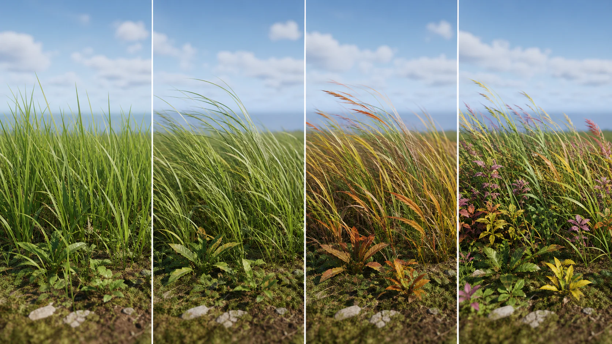
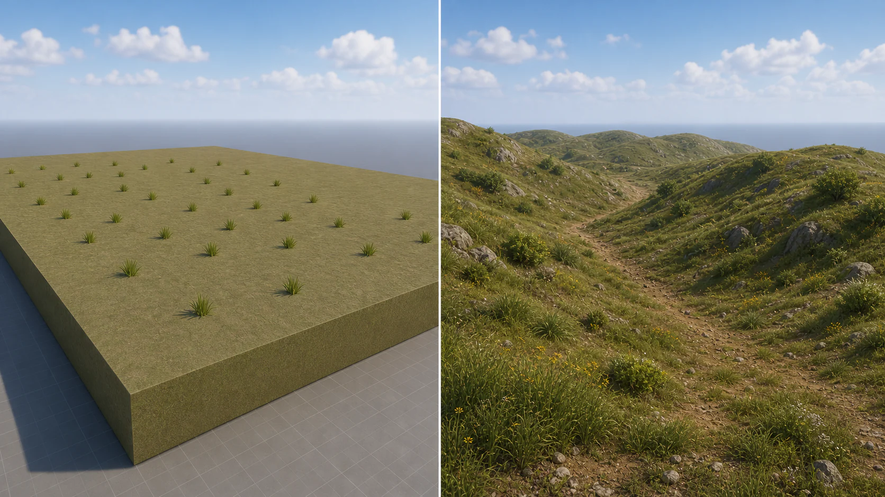
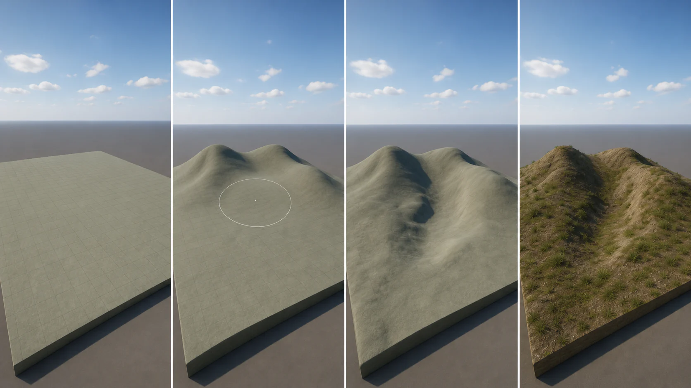
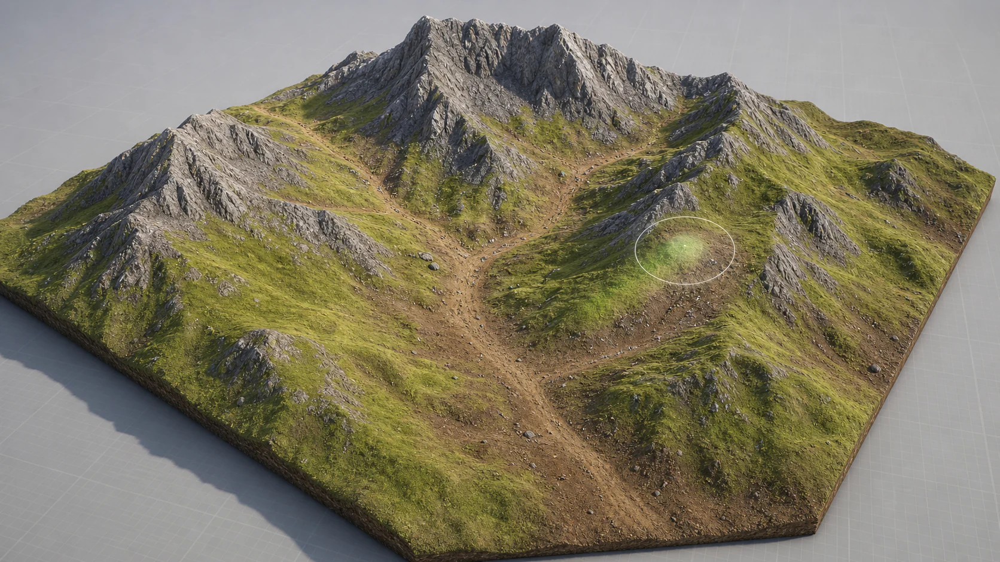
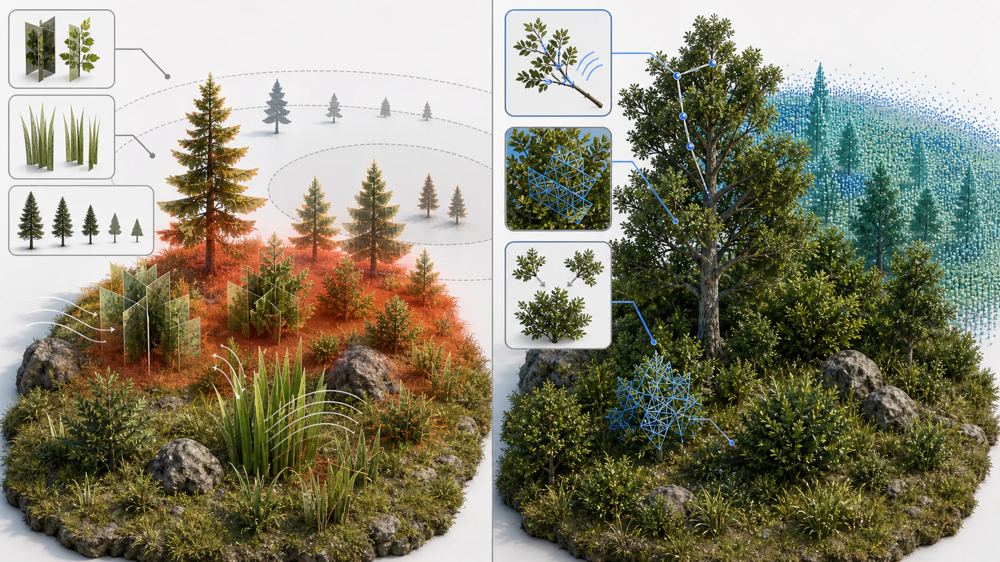
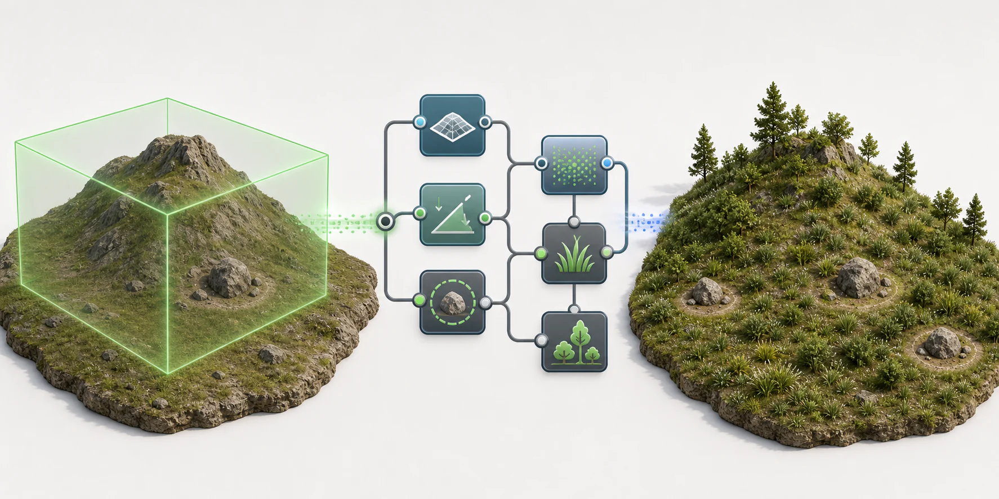

4주차 2교시 — 폴리지 심화와 랜드스케이프 (학생용)
| ## 1교시 복습 |
| - 노말맵의 RGB 채널은 법선 방향을 저장합니다. R=X축, G=Y축, B=Z축이며, 보라색이면 평평한 부분입니다. - 나나이트는 수동으로 LOD 단계를 만들 필요 없이 엔진이 자동으로 관리합니다. 팝핑 없이 매끄러운 전환이 이루어집니다. - 폴리지에서 Density / 1Kuu는 1000×1000 Unreal Units 영역 기준 배치 개수이며, 이번 실습에서는 300~500 정도가 적당합니다. |
| 1교시에서 만든 풀밭은 풀이 움직이지 않고, 바닥이 평평한 Cube라는 한계가 있습니다. 2교시에서는 풀에 생명을 불어넣고, 실제 지형을 만들며, UE 5.7에서 새로 나온 기술도 살펴봅니다. |
심화 개념 1: 폴리지 머테리얼 커스터마이징

바람 (Wind) — WPO 기반 애니메이션
풀에 바람 효과를 넣으려면 머테리얼 인스턴스에서 설정합니다.
올바른 MI 선택:
풀 에셋 폴더에 MI가 2개 있습니다. 3D 모델용 MI를 열어야 합니다. Billboard MI를 열면 바람 설정을 해도 풀이 흔들리지 않습니다.
Content Browser에서 풀 에셋 폴더를 열면 Material Instance가 두 개 보입니다.
| 에셋 | 용도 | 사용 여부 |
|---|---|---|
| MI_[ID] | 3D 모델용 머테리얼 인스턴스 | 이 항목을 열어야 합니다 |
| MI_[ID]_Billboard | 원거리 2D 평면 대체용 | 사용하지 않음 |
MI 열기:
- MI_[ID] (Billboard가 아닌 것)를 더블클릭합니다
머테리얼 인스턴스 에디터가 열립니다. 1교시에서 노말맵 설정했을 때와 같은 인터페이스입니다. 왼쪽에 3D 프리뷰가 있고 오른쪽에 Details + Layer Parameters 탭이 보입니다. 프리뷰에는 풀 메쉬가 아니라 기본 구체에 풀 머테리얼이 입혀져 있으며, 초록색 구체가 보이면 정상입니다.
- Details 패널에서 Parameter Groups를 확인합니다
1교시에서 바닥 MI를 열었을 때는 00-Global, 01-Base Color, 04-Normal 같은 섹션이 있었습니다. 풀 MI의 마스터 머테리얼은 구조가 다릅니다. Quixel의 식물용 마스터 머테리얼은 바닥용보다 파라미터가 훨씬 많습니다. 아래로 스크롤하면 10번대, 13번대 섹션이 보입니다.
Parameter Groups 전체 구조:
| 번호 | 섹션 | 역할 |
|---|---|---|
| 01 | Base Color | 기본 색상 |
| 02 | Translucency | 반투명 (잎사귀 뒤에서 빛이 비치는 효과) |
| 03 | Specular | 반사 |
| 04 | Roughness | 거칠기 |
| 05 | Normal | 노말맵 (1교시에서 배운 것) |
| 06 | Opacity | 투명도 |
| 10 | Wind | 바람 — 핵심 항목! |
| 11 | Seasons | 계절 |
| 13 | ColorVariation | 색상 다양성 |
| 14 | Growth Effect | 성장 효과 |
10번 이후의 섹션들이 식물 전용 파라미터입니다. 바닥 MI에는 없는 것들이며, 오늘은 10, 11, 13번을 다룹니다.
10 - Wind 섹션 설정:
- Details 패널을 아래로 스크롤하여 10 - Wind 섹션을 찾습니다. 접혀있으면 ▶ 화살표를 클릭하여 펼칩니다
펼치면 파라미터가 10개 가까이 나열되어 있습니다. disable Wind Animation, primary Animation, secondary Animation, Local Primary Wind Strength 등이 보입니다. 각 파라미터 왼쪽에 체크박스가 있고, 체크해야 값을 변경할 수 있습니다.
바람은 실제 물리 시뮬레이션이 아닙니다. WPO(World Position Offset)라는 기법을 사용하며, 셰이더가 버텍스의 위치를 매 프레임마다 살짝 이동시키는 방식입니다. 물리 엔진이 아니라 시각적 트릭으로, 바람에 물리적으로 휘어지는 것이 아니라 ‘흔들리는 것처럼 보이게’ 만드는 것입니다.
- 다음 파라미터들을 설정합니다
- disable Wind Animation: 체크하지 않습니다. 이 항목을 체크하면 바람이 완전히 꺼집니다. 기본값(체크 안 됨) 유지
- primary Animation: 체크합니다. 이건 풀 전체가 큰 호흡으로 출렁이는 움직임입니다. 줄기 전체가 한 방향으로 기우는 느낌입니다
- secondary Animation: 체크합니다. 이건 잎사귀 끝의 미세한 떨림입니다. primary만 켜면 전체가 뻣뻣하게 흔들립니다. secondary까지 켜야 잎이 떨리면서 자연스러워집니다
자연스럽게 하려면 primary와 secondary 둘 다 켜야 합니다. 하나만 켜면 뻣뻣해집니다.
- Local Primary Wind Strength: 3.0으로 설정합니다. 주된 흔들림의 세기입니다
- Local Secondary Wind Strength: 1.0으로 설정합니다. 잔떨림의 세기이며, primary보다 약하게 하는 것이 자연스럽습니다
Wind Strength 비교:
| Strength | 결과 |
|---|---|
| 1.0 | 살랑살랑. 미풍. 거의 흔들리지 않음 |
| 3.0 | 적당한 바람. 자연스러운 흔들림. 대부분의 상황에 적합 |
| 5.0 | 센 바람. 숲속 바람 정도 |
| 10.0 | 강풍. 과하게 흔들림. 부자연스러움 |
성능 관련 설정:
아래쪽에 성능 관련 파라미터들이 있습니다. 이건 기본값 그대로 두면 됩니다.
- use Distance Based WPO Fade: 체크. 멀리 있는 폴리지는 바람 애니메이션을 끕니다. 어차피 멀리서는 흔들림이 안 보이니까, 계산을 안 해서 성능을 확보하는 것입니다
- use simplified Wind: 체크. 간소화된 바람 연산
- WPO Fade Disable Distance: 3500.0. 이 거리(35m) 이후의 폴리지는 바람 OFF
에디터에서 바람이 안 보일 수 있습니다. 그럴 때는 Play 모드(Alt+P)에서 확인해보세요. 에디터 뷰에서는 WPO 미리보기가 안 되는 경우가 있습니다.
계절 (Seasons)
같은 머테리얼 인스턴스 에디터에서 11 - Seasons 섹션을 펼칩니다.
- use Seasons: 체크합니다
- 체크하는 순간 풀 색이 변하기 시작합니다. 프리뷰 구체에서 색 변화가 보입니다
- Health Color Overlay: 색상 막대를 클릭하면 컬러 피커가 열립니다
- 가을빛을 만들려면: 주황 계열 (R:200, G:120, B:50 정도)
- 겨울 느낌: 갈색 계열 (R:100, G:80, B:40)
- 이 색이 풀 위에 오버레이됩니다
- Health Offset: 5.0으로 설정합니다
- 계절 변화의 강도입니다. 0이면 거의 안 변하고, 10이면 색 변화가 크게 나타납니다
- randomize Health Effect: 체크합니다
- 이 항목을 켜면 풀마다 계절 변화 정도가 랜덤하게 적용됩니다
- 일부는 아직 초록이고 일부는 갈색 — 계절이 바뀌는 과도기처럼 자연스럽습니다
- 안 켜면 모든 풀이 동시에 똑같이 변해서 부자연스럽습니다
봄을 만들고 싶으면 Seasons를 끄고, ColorVariation에서 연두빛을 넣으면 됩니다.
Color Variation
자연에서는 풀마다 색이 약간씩 다릅니다. ColorVariation으로 이 효과를 구현할 수 있습니다.
같은 에디터에서 13 - ColorVariation 섹션을 펼칩니다.
use Color Variations: 체크합니다
색상 3개를 설정합니다
- Color Var Color 01: 주황빛 (가을 단풍 느낌)
- Color Var Color 02: 연노랑 (마른 풀)
- Color Var Color 03: 분홍빛 (꽃 느낌)
- 각 색상 막대를 클릭해서 컬러 피커에서 선택합니다
이 3가지 색이 랜덤하게 섞여서 자연스러운 색 변화를 만듭니다. 비슷한 톤(초록 계열 3개)으로 하면 미묘한 변화, 다른 톤(초록+노랑+빨강)으로 하면 화려한 변화가 생깁니다.
- randomize per Plant Part: 체크합니다
- 한 식물 안에서도 부위별로 다른 색이 적용됩니다
- 잎사귀마다 약간씩 다른 색 — 이것이 자연스러움의 핵심입니다
베이스컬러를 바꾸면 전체가 한꺼번에 바뀌지만, ColorVariation은 식물마다, 부위마다 랜덤하게 다른 색을 적용하여 훨씬 자연스럽습니다.
학생 따라하기: 풀 MI를 열고 (Billboard 아닌 것!) Wind primary+secondary를 켜고, Seasons 가을빛을 넣어보세요. ColorVariation도 켜보세요.
심화 개념 2: 랜드스케이프 시스템
왜 랜드스케이프가 필요한가
자연에는 완벽하게 평평한 바닥이 없습니다. 언덕, 계곡, 경사면이 있고, Cube 바닥은 끝이 뚝 끊깁니다. 랜드스케이프는 이러한 자연 지형을 표현하기 위한 시스템입니다.
Cube 바닥과 랜드스케이프의 차이:
| Cube 바닥 | 랜드스케이프 | |
|---|---|---|
| 형태 | 완전히 평평한 면. 끝이 직각으로 끊김 | 높낮이 자유자재. 산, 언덕, 계곡 표현 가능 |
| 크기 | Scale로 키울 수 있지만 여전히 평면 | 매우 넓은 지형. 오픈월드 수준 |
| 경사면 | 없음 | Sculpt로 자유롭게 조각 |
| 머테리얼 | 단일 머테리얼 드래그 앤 드롭 | 여러 머테리얼을 Paint Layer로 영역별 칠하기 |
| LOD | 없음 | Component 단위로 자동 LOD |
| 폴리지 | 평면에만 배치됨 | 경사면, 언덕 위에도 자연스럽게 배치 |

랜드스케이프는 높이맵(Heightmap) 기반 지형 시스템입니다. 높이맵이란 흑백 이미지에서 밝은 부분이 높고 어두운 부분이 낮은 것을 의미합니다. 이를 기반으로 3D 지형을 만들며, Sculpt 도구로 직접 칠하면 높이맵이 실시간으로 변경되면서 지형이 솟아오르거나 내려갑니다.
랜드스케이프 생성
- 에디터 상단 모드 바에서 Selection Mode 드롭다운을 클릭합니다
- Landscape를 선택합니다 (또는 단축키 Shift+2)
화면이 바뀝니다. 좌측의 Place Actors 또는 Foliage 패널이 사라지고 Landscape 패널이 열립니다. 뷰포트에는 초록색 격자 와이어프레임이 표시될 수 있습니다 — 이것은 랜드스케이프가 생성될 미리보기 영역입니다.
패널 상단에 3개 탭이 보입니다.
| 탭 | 역할 |
|---|---|
| Manage | 랜드스케이프 생성, 삭제, 관리 |
| Sculpt | 지형 조각 — 올리기, 내리기, 다듬기 |
| Paint | 머테리얼 칠하기 — 여러 레이어 |
Manage 탭이 기본으로 선택되어 있습니다. 하단에 Create 섹션이 보입니다
설정을 확인합니다
| 설정 | 기본값 | 의미 |
|---|---|---|
| Section Size | 63x63 Quads | 하나의 섹션을 구성하는 정점 수. 높을수록 세밀 |
| Sections Per Component | 1x1 | 컴포넌트당 섹션 수 |
| Number of Components | 8x8 | 지형의 전체 크기. 8x8이면 약 500m x 500m |
기본값으로 만들면 적당한 크기의 지형이 생깁니다. 너무 크게 만들면 성능이 떨어지고, 너무 작으면 환경이 좁습니다. 8x8이면 충분합니다.
언리얼의 랜드스케이프는 Component 단위로 분할되어 있습니다. 각 Component가 독립적으로 LOD를 관리하며, 멀리 있는 Component는 폴리곤이 줄어들고 가까이 있는 것은 디테일하게 표현됩니다. 폴리지의 나나이트와 비슷한 개념입니다.
- Material 슬롯은 먼저 비워둡니다. 나중에 따로 적용할 것입니다
- Create 버튼을 클릭합니다
클릭하면 잠시 로딩 후 뷰포트에 거대한 평면이 생성됩니다. 기본 색상(초록 또는 회색)의 넓은 지형이며, 1교시에서 쓰던 Cube 바닥과는 훨씬 넓은 지형입니다. 카메라를 RMB+WASD로 이동해보면 넓은 지형 범위를 확인할 수 있습니다. 처음에는 평평하지만 Sculpt 도구로 언덕을 만들 수 있습니다.
Outliner를 보면 Landscape 액터가 새로 생겨 있습니다. 일반 StaticMesh와 다른 특수한 액터입니다.
- 기존 Cube 바닥이 있다면 삭제합니다
- Selection Mode(Shift+1)로 돌아갑니다
- Outliner에서 Cube를 찾아 Delete키를 누릅니다
- 랜드스케이프와 Cube가 같은 높이에 겹쳐 있으면 폴리지가 어디에 깔리는지 혼란스러우니까요
Sculpt 모드 — 지형 조각
- Landscape 패널에서 Sculpt 탭을 클릭합니다
패널의 내용이 바뀝니다. Manage 탭의 Create 설정들이 사라지고, 왼쪽에 조각 도구 아이콘들이 세로로 나열됩니다. Sculpt, Smooth, Flatten, Ramp, Erosion, Hydro Erosion, Noise, Retopologize 등 10개 가까운 도구가 있습니다. 오른쪽에는 Brush Settings(Brush Size, Tool Strength, Brush Falloff)가 표시됩니다.
여러 도구가 있지만 핵심은 3개입니다.
| 도구 | 역할 | 사용 빈도 |
|---|---|---|
| Sculpt | 지형 올리기/내리기. 기본 조각 도구 | |
| Smooth | 거친 표면을 부드럽게 다듬기 | |
| Flatten | 특정 높이로 평평하게 깎기. 건물 터 닦기 용도 | |
| Erosion | 자연 침식 효과 | (소개만) |
| Noise | 랜덤 울퉁불퉁함 추가 | (소개만) |
Sculpt + Smooth 두 개면 90%는 해결됩니다.
Sculpt 도구 — 올리기/내리기:
Sculpt 도구가 기본 선택되어 있습니다
뷰포트에서 랜드스케이프 위에 마우스를 가져가면 원형 브러시가 표시됩니다. 흰색 또는 노란색 원이며, 폴리지 브러시와 비슷하게 생겼지만 색이 다릅니다. 이 원의 크기가 Sculpt 영향 범위입니다.
마우스가 랜드스케이프 위에 있는지 확인하세요. Cube나 다른 오브젝트 위에서는 브러시가 표시되지 않습니다. Landscape 모드(Shift+2)인지도 확인하세요. Selection Mode에서는 Sculpt가 안 됩니다.
- 마우스 왼쪽 버튼을 누른 채 드래그하면 지형이 솟아오릅니다
- 드래그하는 동안 브러시 영역의 지형이 실시간으로 올라갑니다. 마치 점토를 밀어올리는 느낌입니다
- 같은 자리에서 여러 번 드래그하면 점점 더 높아집니다. 한 번에 원하는 높이가 안 나오면 반복하세요
- 넓은 영역을 칠하면 완만한 언덕, 좁은 영역을 칠하면 뾰족한 봉우리가 됩니다
- Shift를 누른 채 드래그하면 지형이 내려갑니다
- 올리기의 반대 동작입니다. 계곡이나 웅덩이, 강줄기를 만들 수 있습니다
- Shift를 떼면 다시 올리기로 전환됩니다
올리기는 일반 드래그, 내리기는 Shift+드래그입니다. 1교시에서 폴리지 Paint/Erase를 Shift로 전환했던 것과 같은 조작 방식입니다. 언리얼은 Shift가 ’반대 동작’의 의미를 가집니다. Sculpt에서도 올리기↔︎내리기, 폴리지에서도 칠하기↔︎지우기입니다.
Brush 설정:
자연스러운 지형을 만들려면 브러시 설정이 중요합니다.
| 설정 | 위치 | 추천값 | 설명 |
|---|---|---|---|
| Brush Size | Sculpt 패널 | 8000~15000 (넓은 언덕) / 1000~3000 (디테일) | [ ] 키로 조절. 폴리지와 같은 단축키! |
| Tool Strength | Sculpt 패널 | 0.3 | 조각 세기. 높으면 한 번에 산이 솟구침. 0.3이면 천천히 올라가서 자연스러움 |
| Brush Falloff | Sculpt 패널 | 0.5~0.7 | 가장자리 부드러움. 0이면 전체 균일하게, 1이면 가장자리가 뚝 끊김. 0.5면 가운데는 많이, 가장자리는 적게 올라가서 자연스러운 경사가 됨 |
Tool Strength를 1.0으로 하면 한 번에 에베레스트가 생깁니다. 0.3으로 하고 천천히 여러 번 칠하는 것이 자연스럽습니다.
언덕과 계곡 만들기:
- Brush Size를 크게 설정합니다 (8000~10000)
- Tool Strength를 0.3, Brush Falloff를 0.5로 설정합니다
- 지형 중앙 근처를 천천히 드래그합니다 → 넓고 완만한 언덕이 생깁니다
- 다른 위치에 하나 더 만듭니다 → 언덕 2~3개
- 언덕 사이에서 Shift+드래그합니다 → 계곡이 생깁니다
- Brush Size를 줄여서 (2000~3000) 세밀한 돌출을 추가합니다

Smooth — 부드럽게 다듬기:
Sculpt로 만든 지형은 보통 거칠기 때문에 부드럽게 다듬어야 자연스럽습니다.
- 방법 1: Sculpt 탭 도구 목록에서 Smooth를 선택한 후 드래그
- 방법 2 (추천): Sculpt 도구 상태에서 Ctrl+드래그 — 즉시 Smooth로 전환. Ctrl을 떼면 다시 Sculpt
Ctrl+드래그가 편합니다. Sculpt로 대충 만들고 Ctrl 누르면서 다듬으면 됩니다. 도구를 바꿀 필요 없습니다.
Flatten, Erosion, Noise — 소개:
- Flatten: 도구 목록에서 선택 후 드래그하면, 클릭한 높이를 기준으로 주변이 평평하게 깎입니다. 건물 터를 닦을 때, 언덕 위에 평평한 공간이 필요할 때 사용합니다.
- Erosion: 비에 깎인 것 같은 자연 침식 효과입니다. 지금은 Sculpt+Smooth면 충분합니다.
- Noise: 랜덤한 높낮이를 추가합니다. 완전히 평평한 평원이 부자연스러우면 Noise를 살짝 칠해보세요.
학생 따라하기: Landscape 모드(Shift+2) > Sculpt 탭 > 언덕 2~3개 만들고 Smooth(Ctrl+드래그)로 다듬어보세요.
Paint 모드 — 2개 레이어 칠하기
지형은 만들었지만 색이 밋밋합니다. 머테리얼을 입혀봅니다.
단일 머테리얼 적용:
먼저 기본적인 머테리얼을 하나 입혀봅니다.
Selection Mode(Shift+1)로 돌아갑니다. Landscape 모드에서는 Details 패널이 다르게 보이기 때문입니다
뷰포트에서 랜드스케이프를 클릭하여 선택합니다. Outliner에서 Landscape 항목이 하이라이트되는지 확인합니다
오른쪽 Details 패널에서 Landscape Material 항목을 찾습니다
- Details 패널이 속성이 매우 많아서 스크롤해야 합니다
- 검색창에 “landscape material”을 타이핑하면 바로 찾을 수 있습니다
- Landscape 섹션 안에 Landscape Material 슬롯이 있습니다. 현재 None으로 비어있습니다
- Content Browser에서 1교시에 쓰던 Quixel 바닥 MI를 이 슬롯으로 드래그하여 넣습니다
- 또는 슬롯 옆 드롭다운 화살표를 클릭해서 검색하여 선택할 수도 있습니다
Cube에 머테리얼 넣을 때는 Content Browser에서 뷰포트로 직접 드래그 앤 드롭했지만, 랜드스케이프에서는 그 방식이 안 됩니다. Details 패널의 Landscape Material 슬롯에 넣어야 합니다. 드래그 앤 드롭을 시도하면 아무 반응이 없습니다.
머테리얼이 적용되면 잠시 셰이더 컴파일 후 지형 전체에 텍스처가 입혀집니다. 언덕과 계곡에도 자연스럽게 텍스처가 따라갑니다.
텍스처가 너무 크게 보이거나 밋밋할 수 있습니다. 그러면 MI를 더블클릭해서 열고 00-Global > Tiling 값을 3.0~5.0으로 올려보세요. 더 많이 반복되면서 작아지면 자연스러워집니다.
2개 레이어로 칠하기 — Landscape Material Layer:
산 꼭대기부터 계곡 바닥까지 다 같은 머테리얼이면 부자연스럽습니다. 산 꼭대기는 바위, 경사면은 풀, 계곡은 흙 — 이렇게 영역별로 다른 머테리얼을 칠할 수 있습니다. 이것이 Landscape Material Layer 기능입니다.
- Content Browser에서 빈 공간에 RMB > Material을 선택하여 새 머테리얼을 만듭니다
- 이름: M_Landscape_Sample
이 머테리얼을 더블클릭하여 머테리얼 에디터를 엽니다
노드 그래프에서 두 개의 Landscape Layer Blend 또는 Landscape Layer Coords를 설정합니다
- 또는 더 간단하게: Fab에서 “Landscape Auto Material”을 검색하여 이미 만들어진 랜드스케이프 머테리얼을 받아 사용합니다
머테리얼을 직접 만드는 것은 복잡하므로 오늘은 개념만 이해하고 넘어갑니다. 핵심은 ’여러 머테리얼을 레이어처럼 칠할 수 있다’는 것입니다.
- Landscape 모드 > Paint 탭으로 가면 등록된 레이어가 보입니다
- 원하는 레이어를 선택하고 브러시로 칠하면 — “여기는 풀, 여기는 돌” 이렇게 영역별로 다른 머테리얼이 적용됩니다

이 기능을 제대로 활용하려면 Landscape Material을 직접 만들어야 하는데, 그것은 5주차 라이팅과 함께 다룰 예정입니다. 오늘은 ’이런 것이 가능하다’는 것만 알아두면 됩니다.
폴리지 + 랜드스케이프 연동
Foliage 모드로 전환합니다 (Shift+3)
가장 중요한 단계: Foliage 패널 중단의 Filters 섹션을 확인합니다
Filters에 체크박스가 여러 개 있습니다:
- Landscape ← 이것이 체크되어 있어야 합니다!
- Static Meshes
- BSP
- □ Foliage
- □ Translucent
Landscape 체크가 안 되어 있으면 랜드스케이프 위에 폴리지가 칠해지지 않습니다. 가장 흔한 원인이므로 먼저 확인하세요.
1교시에서 등록한 폴리지 에셋이 그대로 남아있습니다. Paint로 랜드스케이프 위를 칠해봅니다
언덕 경사면에도 자연스럽게 풀이 깔립니다!
- Cube에서는 평면에만 깔렸는데, 랜드스케이프에서는 경사면에도 깔립니다
- 계곡 안쪽에도 칠할 수 있습니다
- 경사면에서 풀이 수직으로 서 있으면 이상할 수 있습니다. 이때 Placement > Align to Normal을 체크합니다
- 에셋 클릭 > Placement 섹션 > Align to Normal
- 풀이 경사면 각도를 따라 기울어집니다
나무는 언덕 위에, 풀은 평지에 칠하면 자연스럽습니다. 나무만 체크하고 언덕을 칠하고, 풀만 체크하고 평지를 칠합니다.
심화 개념 3: UE 5.7 최신 기술 미리보기
UE 5.7에서 새로 나온 기술을 살펴봅니다. 아직 실험적(Experimental)이라 수업에서 직접 쓰지는 않지만, 방향성을 알아두면 좋습니다.
Nanite Foliage 사례
1교시에서 배운 나나이트를 폴리지에 특화시킨 것이 UE 5.7의 Nanite Foliage입니다.
기존 폴리지와 Nanite Foliage의 차이:
| 기존 폴리지 (지금 배운 것) | Nanite Foliage (UE 5.7 Experimental) | |
|---|---|---|
| 바람 | WPO — 셰이더에서 버텍스 이동. 시각적 트릭 | Nanite Skinning — 실제 본(bone) 기반 애니메이션. 더 사실적 |
| 원거리 | 알파카드 또는 LOD 전환. 팝핑 발생 가능 | Nanite Voxels — 원거리에서 복셀로 렌더링. 팝핑 없음 |
| 구조 | 개별 Static Mesh | Nanite Assembly — 고밀도 나무를 모듈형 인스턴스로 구성 |
| 성능 | 알파카드/LOD 기반 최적화 | Epic 시연 사례 기준으로 고품질 폴리지에서 성능 개선 가능성 소개 |
| 상태 | 안정적인 표준 방식 | Experimental. 실제 프로젝트 적용은 신중하게 판단 |

기존 방식은 알파카드라고 해서 투명한 카드에 풀 이미지를 그린 것인데, 겹치면 오버드로우가 발생해서 성능이 떨어집니다. Nanite Foliage는 복셀이라는 기술로 이 문제를 해결했습니다. 멀리 있는 나뭇잎 수백만 개를 1픽셀짜리 점으로 그리는 방식입니다.
Fab에서 ’Megaplants’를 검색하면 Nanite Foliage 전용 고품질 나무 에셋이 있습니다. 기존 European Spindle과 비교하면 디테일이 차원이 다릅니다.
아직 Experimental이라 수업에서는 기존 방식을 사용하지만, 앞으로 표준이 될 가능성이 높습니다.
PCG (Procedural Content Generation) 맛보기
지금까지 폴리지를 브러시로 칠하는 수동 배치 방식을 사용했습니다. 그러나 대규모 오픈월드 게임에서는 수동으로 풀을 칠할 수 없습니다. 맵이 수 킬로미터인데 다 칠할 수 없기 때문입니다. 규칙 기반으로 자동 배치하는 시스템이 필요하며, 그것이 PCG입니다.
PCG = Procedural Content Generation. 규칙을 정의하면 엔진이 자동으로 콘텐츠를 생성합니다.
| 수동 배치 (지금 배운 것) | PCG (자동 배치) | |
|---|---|---|
| 방식 | 브러시로 직접 칠하기 | 규칙(노드 그래프)을 정의하면 자동 생성 |
| 예시 | “여기에 풀을 칠하자” (브러시 드래그) | “경사도 30도 이하인 곳에 풀을 밀도 500으로 배치하되, 바위 주변 2m는 비워라” (규칙 설정) |
| 규모 | 소규모 씬에 적합 | 대규모 오픈월드에 유리 |
| 수정 | 브러시로 다시 칠하기 | 규칙을 수정하면 전체가 자동 갱신 |
| UE 5.7 상태 | Production-Ready | Production-Ready (5.7에서 정식 격상) |

UE 5.7에서 PCG 프레임워크가 Production-Ready로 격상되었습니다. 이전까지는 Beta였으나 이제 정식입니다.
간단 시연:
- Selection Mode(Shift+1)에서 Place Actors 패널을 엽니다
- 검색창에 “PCG”를 입력하면 PCG Volume이 나타납니다
- PCG Volume을 뷰포트의 랜드스케이프 위에 드래그하여 배치합니다
- 초록색 박스가 생깁니다. 이 박스 안이 PCG가 작동하는 영역입니다
- 박스 크기를 Scale로 키우면 더 넓은 영역에 적용됩니다
- PCG Volume을 선택하고 Details 패널에서 PCG Graph 항목을 찾습니다
- 드롭다운에서 새 PCG Graph를 만들거나 기존 것을 선택합니다
- PCG Graph를 더블클릭하면 PCG 그래프 에디터가 열립니다
- 블루프린트나 머테리얼 에디터와 비슷한 노드 그래프 인터페이스입니다
- 빈 캔버스에 노드를 추가하고 와이어로 연결합니다
- 기본적인 노드 연결:
- RMB 클릭 > “Surface Sampler” 노드 추가 — 지형 표면에서 포인트를 샘플링
- RMB 클릭 > “Static Mesh Spawner” 노드 추가 — 샘플링된 위치에 메쉬 배치
- Surface Sampler의 출력 핀을 Static Mesh Spawner의 입력 핀에 연결합니다
- Static Mesh Spawner의 Details에서 배치할 풀 에셋(SM_)을 지정합니다
- PCG 그래프를 저장하고 에디터를 닫으면, PCG Volume 영역 안에 자동으로 풀이 배치됩니다
브러시로 칠하지 않았는데 풀이 자동으로 깔리는 것입니다. Surface Sampler가 ‘어디에 배치할지’ 결정하고, Static Mesh Spawner가 ‘뭘 배치할지’ 결정합니다. 노드를 더 추가하면 ‘경사면에는 빼기’, ‘바위 주변은 비우기’ 같은 조건도 걸 수 있습니다.
지금 수업에서는 브러시 Paint를 마스터하는 것이 우선이며, PCG는 ‘이런 방식도 있다’ 정도로 알아두면 됩니다. 관심 있는 분은 3교시 확장 과제에서 직접 해볼 수 있습니다.
정리 + 3교시 안내
- 폴리지 머테리얼: MI(Billboard 아닌 것!)에서 Wind, Seasons, ColorVariation 설정. 바람은 WPO 기반 — primary(전체 출렁임) + secondary(잎 잔떨림). Strength 3.0이 적당합니다.
- 랜드스케이프: Shift+2로 진입. Sculpt(드래그=올리기, Shift=내리기) + Smooth(Ctrl+드래그)로 지형 조각. 머테리얼은 Details > Landscape Material 슬롯. Paint Layer로 영역별 머테리얼 칠하기 가능합니다.
- 폴리지+랜드스케이프 연동: Landscape 사용 시 Filters > Landscape 체크. 경사면에서는 Align to Normal. 나무=언덕, 풀=평지 전략입니다.
- UE 5.7 방향: Nanite Foliage(본 기반 바람 + 복셀 렌더링) + PCG(규칙 기반 자동 배치, Production-Ready)입니다.
3교시 안내:
3교시에는 직접 랜드스케이프 + 폴리지로 자연환경 씬을 만듭니다.
Cube 바닥으로도 기본 제출이 가능합니다. 먼저 완성하는 쪽을 선택하세요.
기본 제출 기준 5가지: 나나이트 / 폴리지(나무+풀, Density/Scale) / Wind / 노말맵 / 저장+스크린샷 우수 기준: Landscape Sculpt / Landscape Material Layer / Seasons·ColorVariation / Preserve Area / Align to Normal